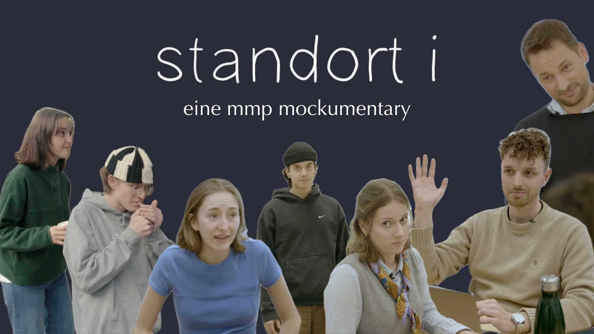
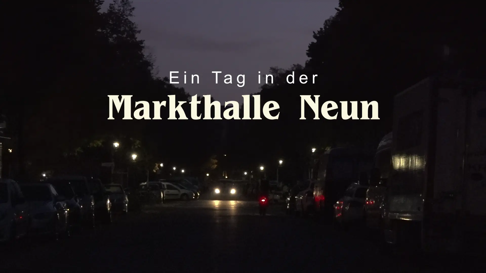

The everyday life of Multimedia Production students told in mockumentary style.

overview
context: uni project
timeline: 1 semester
role: concept, direction, editing, music
tools: Miro, Premiere Pro
